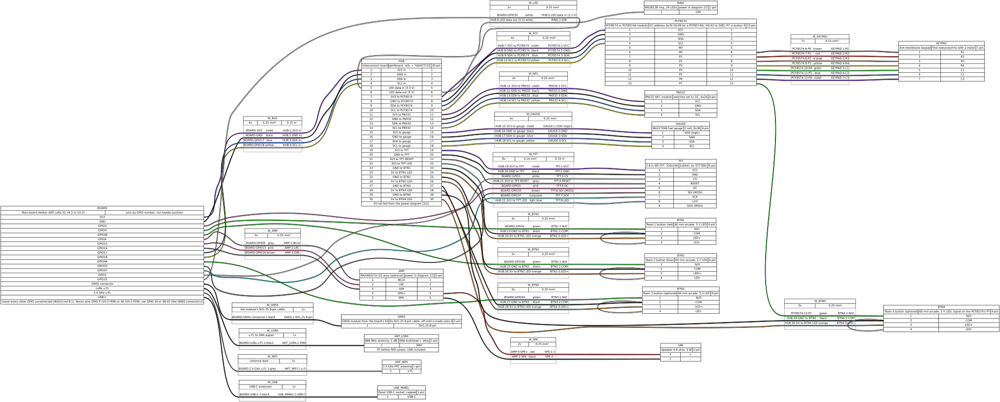
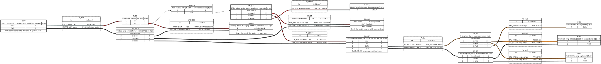

Bauanleitungen
Die Props von Atalaia werden aus handelsüblichen Teilen rund um ein ESP32-Board gebaut, ohne eigens gefertigte Leiterplatte. Hier stehen die Pins und Schaltpläne der Field Box, ihr einfacher Ausgang für eine Sirene oder eine Nebelmaschine sowie die Anleitungen für den Satelliten, den I/O-Pod, den Erweiterungsanschluss, das Ziel-Addon und das I2C-Ausgangsmodul, gekürzt; die vollständigen Anleitungen mit allen Prüfungen und den Tabellen zur Fehlersuche liegen im Repository (auf Englisch und Portugiesisch). Um die Firmware auf eine Platine zu bringen, lade eine fertige Version herunter oder baue sie selbst: die Firmware-Anleitung (Englisch) erklärt beides. Der Feld-Controller hat eine eigene Einrichtungsanleitung (Englisch). Das Modem hat eine eigene Modem-Anleitung (Englisch).
Unsicher, was womit verbunden ist? So sprechen die Teile miteinander →
Nach diesen Anleitungen wurde noch keine Box gebaut, und die Field Box hat noch kein Gehäuse. Es gibt nur einen Aufbau der Field Box auf dem Labortisch (lose Kabel), der Spiele spielt. Die Pins werden automatisch mit der Firmware abgeglichen, aber jeder Schritt am echten Teil (Gehäuse, Stromversorgung, Laufzeit, Funkreichweite) ist ungetestet, und die Fotos der anderen Boxen kommen mit deren ersten Aufbauten. Wenn du eine baust, erzähl uns, was du dabei findest.
Zuerst die Sicherheit
Diese Regeln gelten für jeden Aufbau auf dieser Seite, wie für die Field Box.
- Schalte ein Board nie ohne seine LoRa-Antenne ein, auch nicht über USB: Senden in einen offenen Antennenausgang kann den Verstärker des Funks zerstören. Schließ zuerst beide Antennen an und lass sie dran.
- Nur eine Li-Ionen-Zelle in Reihe (1S, 3,0–4,2 V): geschützte Zellen, eine Sicherung nahe an der Zelle und eine Diode gegen eine verkehrt eingesetzte Zelle. Akkubuchse und Ladeschaltung des Boards vertragen eine Zelle; ein 2S-Akku zerstört sie. Prüf vor jedem Anschließen die Polung mit einem Multimeter: kleine Akkustecker haben keine einheitliche Polung.
- Lade nur unter Aufsicht, nie in einem geschlossenen Koffer, nur zwischen etwa 0 und 45 °C, und bewahr die Zellen beim Arbeiten in einem feuerfesten Beutel auf, außerhalb der Box. Benutz nie eine Zelle, die verbeult, aufgebläht, heiß oder unter 2,5 V ist.
- Nur 3,3-V-Signale ans Board: Der LED-Ring wird über einen Pegelwandler angesteuert, und jedes I2C-Modul muss seine Leitungen auf 3,3 V ziehen, nie auf 5 V.
- Schließ nie etwas an GPIO 5 oder 46 an (das Funk-Frontend; die einzige Ausnahme ist der einfache Ausgang, an dem Pin, den deine Board-Revision frei lässt: 46 auf einem V4.3, 5 auf einem V4.2) und nichts an GPIO 34 oder 38–42 (der GPS-Anschluss des Boards).
- Kein Spiel vor der Messung der Sendeleistung aus der Inbetriebnahme-Liste: Die Firmware hält den Funk mit einer Verstärkung, die noch nicht gemessen wurde, im gesetzlichen Rahmen.
- Kunststoff, nie Metall (der Funk muss hinaus), wetterfest, in einer kräftigen Farbe mit einem „GAME PROP“-Aufkleber, und nichts, das wie ein Sprengsatz aussieht.
- BBs und Paintballs werden sie treffen. Halte Zellen und Boards von den Wänden fern und aus der Schusslinie, schütz einen Handybildschirm mit klarem Polycarbonat (nie Glas), und stell eine Box nie so auf, dass jemand auf sie schießen muss, außer sie ist ein Ziel.
Field Box
Das Haupt-Prop, mit Team-Tastern, Tastenfeld, Farbdisplay, LED-Ring, NFC-Leser und Lautsprecher. Ihre Bauanleitung (auf Englisch und Portugiesisch) hat die Teile, die Schaltpläne, Stromversorgung und Akkusicherheit, das erste Flashen und die Fehlersuche; die Anleitungen unten verweisen bei jedem gemeinsamen Schritt darauf.
Der erste Aufbau auf dem Labortisch
Die Field Box gibt es jetzt außerhalb des Papiers, aber nur als Aufbau auf dem Labortisch: das erste Board, das ein ganzes Spiel spielt, mit Display, Tastern und Tastenfeld an losen Kabeln und noch ohne Gehäuse. Es ist kein fertiges Produkt und keine nach den Anleitungen gebaute Box.


Pins
Die Voreinstellungen der Firmware. Jeder Pin des Boards, der nicht in dieser Tabelle steht, bleibt unbeschaltet.
| Was | GPIO |
|---|---|
| Team-Taster 1 (das erste Team des Spiels) | 4 |
| Team-Taster 2 (das zweite Team) | 48 |
| Team-Taster 3, optional (die Empfangsleitung von UART0 des Boards) | 44 |
| Team-Taster 4 (am Port-Expander des Tastenfelds) | PCF8574 P7 |
| Tastenfeld, über den Port-Expander PCF8574 (Adresse 0x20) | PCF8574 P0–P6 |
| Daten des LED-Rings, über den Pegelwandler 74AHCT125 | 35 |
| MOSI des Displays (SPI) | 33 |
| Takt des Displays (SCK) | 47 |
| Chip-Select des Displays (CS; der Akkuspannungs-Pin des Boards, als Ausgang benutzt) | 1 |
| Daten/Befehl des Displays (DC) | 3 |
| RESET und Hintergrundbeleuchtung des Displays: beide an den 3V3-Pin, kein GPIO | 3V3 |
| I2C SDA, für den Port-Expander des Tastenfelds, den NFC-Leser und die Akkuanzeige (der eigene Bus des Boards) | 17 |
| I2C SCL | 18 |
| BCLK des Verstärkers (optional) | 6 |
| LRC des Verstärkers | 15 |
| DIN des Verstärkers | 16 |
| Passiver Piezo-Summer, optional (ein Boot-Strapping-Pin: seine Schaltung hält ihn auf Low; Firmware-Option, noch nicht in Hardware gebaut) | 45 |
GPIO 1, 35 und 44 sind Pins des Boards, die die Field Box absichtlich mitbenutzt, jeder nur für diesen einen Zweck: 1 ist der Akkuspannungs-Eingang des Boards (die Akkuanzeige liest den Akku per I2C), 35 seine weiße LED (sie flackert leicht mit dem Ring) und 44 die Empfangsleitung von UART0 (die USB-Konsole bleibt unberührt).
Schaltpläne
Zwei Zeichnungen, erzeugt aus den WireViz-Dateien des Repositorys: die Signale samt 3,3-V-Logikversorgung sowie Akku, Schalter und 5-V-Schiene. Die Pins des Boards sind nur mit der GPIO-Nummer benannt: Such jeden Pin an der Nummer, die neben seinem Anschluss aufgedruckt ist. Die Bezeichnungen (Pins, Leitungen, Teile) bleiben in allen Sprachen englisch, wie im Repository; widersprechen sich Text und Zeichnung, gilt die Zeichnung.




Der Schaltplan ist sehr breit: Tipp oder klick darauf, um ihn in voller Größe zu öffnen, wo du zoomen und verschieben kannst. Er liegt auch im dunklen Design auf einem weißen Blatt, damit die Leitungsfarben stimmen.
Der einfache Ausgang: Sirene, Blitzlicht oder Nebel-Fernbedienung
Eine Option für die Field Box und den Satelliten, und der bevorzugte Weg, mit dem eine Box etwas schaltet: eine Sirene, ein Blitzlicht, eine Lampe oder die Fernbedienung einer Nebelmaschine, über einen handelsüblichen RC-Relaisschalter (wie er für ferngesteuerte Modelle verkauft wird). Ein GPIO schickt ein Servosignal über das freie Gatter des Pegelwandlers: 2,0 ms heißt an, 1,0 ms aus, in Halbsekunden-Paketen, die nur das laufende Spiel erneuert. Hängt die Box, startet sie neu oder verliert sie den Strom, hören die Impulse innerhalb von 0,5 s auf und der Schalter öffnet sein Relais. Die Firmware kann das seit Version 0.7.0, als Build-Option; in Hardware gebaut ist es noch nicht. Die Firmware des I/O-Pods hat es auch, an GPIO 33 (und 1): siehe I/O-Pod.
- Ein RC-Relaisschalter, der sein Relais öffnet, wenn das Signal ausbleibt: ein dokumentierter mit Failsafe bei Signalverlust, oder ein No-Name-Schalter erst nach seiner Prüfung auf dem Labortisch. Einer, der seinen letzten Zustand hält, wird nie benutzt. Die Kontakte passend zur Last.
- Eine 3-polige M8-Buchse mit der Aufschrift „OUTPUT 1“ (Pin 1 unbeschaltet, Pin 3 Masse, Pin 4 das Signal), ein 10-kΩ-Widerstand, der den Pin beim Start des Boards auf Low hält, ein 330-Ω-Widerstand zur Buchse und ein 3-adriges Kabel bis 2 m. Es ist nicht die M12-Buchse des Erweiterungsanschlusses.
- Der eigene Akku der Last, mit einer Sicherung zum Relais und einem 5-V-Regler (einem „BEC“ aus dem Modellbau) für den Schalter: Die Box liefert nur das Signal und Masse, nie Strom.
- Eine Firmware mit dem einfachen Ausgang (
python tools/docker_fw.py build --simple-out=on). Sein Pin hängt von der Board-Revision ab: GPIO 46 auf einem V4.3, GPIO 5 auf einem V4.2. Ein zweiter Ausgang an GPIO 45 (--simple-out=on2) nur bei einer Box ohne Piezo-Summer. - Die Ausgänge bleiben aus, bis die Feld-Administration sie an der Box mit der Admin-PIN freigibt und jedem seine Funktion (Sirene, Blitzlicht, Nebel, Licht, Horn) und seine längste Einschaltzeit gibt. Die Box schaltet alle aus beim Start, bei einer Pause und am Spielende (ein Horn zum Spielende darf noch bis zu 10 s tönen).
Nur Kleinspannungs-Lasten (höchstens 24 V DC, empfohlen 2 A), egal was auf dem Relais steht. Nie Netzspannung, nie Pyrotechnik; eine Nebelmaschine nur über einen dokumentierten Kleinspannungs-Fernbedienungseingang. Gehörschutz in der Nähe von Sirenen und Hörnern, Nebel nie in einem geschlossenen Raum ohne die Erlaubnis des Geländes, und nichts, das wie ein Sprengsatz aussieht.
Alle Schritte und Prüfungen: Abschnitt 9.10 der Bauanleitung der Field Box, und die Prüfung jedes RC-Schalters vor seinem ersten Spiel in der Inbetriebnahme-Liste, Schritt 8b (auf Englisch).
Satellit
Eine kleine Box für einen Nebenpunkt oder ein Leuchtfeuer: das Board der Field Box mit zwei großen Team-Tastern (ein dritter geht auch), einem LED-Ring, der das haltende Team zeigt, dem kleinen Display des Boards selbst und einer 18650-Zelle. Etwa 30–40 € an Teilen (die Schätzung des Projekts). Er läuft mit der Firmware der Field Box selbst, nur mit weniger Teilen: Die Firmware meldet beim Start jedes fehlende Teil einmal und läuft weiter.
Ohne Tastenfeld kann er kein Spiel selbst wählen: Er spielt die Spiele, zu denen ihn ein Feld-Controller einlädt, als Satellit oder Master bei Master und Satelliten oder als Zone in jedem Modus, der nur Team-Taster braucht (Domination, Hold-All Domination, Last Stand). In ein Feld aufgenommen wird er per USB-Kabel oder mit dem Kopplungscode auf seinem kleinen Display (für eine Feldkarte hat er keinen NFC-Leser).
Teile
- Board Heltec WiFi LoRa 32 V4, Revision V4.2 oder V4.3, 863–928 MHz, ohne Gehäuse.
- Eine 868-MHz-Antenne mit höchstens 2 dBi (die aus dem Kit des Boards) und eine 2,4-GHz-Antenne, die Pflicht ist: Ersteinrichtung, Modus-Downloads und Firmware-Updates laufen über WLAN.
- Zwei (oder drei) 60-mm-Arcade-Taster mit 5-V-LED.
- Ein LED-Ring WS2812B (24 LEDs als Voreinstellung; 12 oder 16 mit einer Firmware-Einstellung), mit dem Pegelwandler 74AHCT125, einem 330-Ω-Widerstand und einem 1000-µF-Kondensator, auf einer kleinen Lochrasterplatine.
- Eine Akkuanzeige MAX17048, empfohlen: Ohne sie kennt die Box ihren Akkustand nie.
- Eine geschützte 18650-Zelle in einem Halter (oder ein 1S-Akku mit Schutzplatine), eine 5-A-Sicherung, eine Schottky-Diode, ein abgedeckter Hauptschalter, ein 5-V-Aufwärtswandler für den Ring und Hebelklemmen: die Stromversorgung der Field Box mit einer Zelle.
- Ton nach Wunsch: ein passiver Piezo-Summer (am günstigsten: er spielt die Töne der Spiele als kurze Tonfolgen, mit einer Firmware-Option; noch nicht in Hardware gebaut), der Verstärker MAX98357A der Field Box und ein kleiner Lautsprecher, oder beides.
- Ein einfacher Ausgang ist optional: eine Sirene, ein Blitzlicht, eine Lampe oder die Fernbedienung einer Nebelmaschine, geschaltet über einen RC-Relaisschalter, wie an der Field Box. Ein Master oder Satellit, der eine Sirene ertönen lässt, braucht keine weitere Box. Noch nicht in Hardware gebaut.
- Ein IP65-Kunststoffgehäuse in einer kräftigen Farbe, mit Druckausgleich und Kabelverschraubungen, und „GAME PROP“-Aufkleber.
Pins
Die Voreinstellungen der Firmware. Jeder Pin des Boards, der nicht in dieser Tabelle steht, bleibt unbeschaltet.
| Was | GPIO |
|---|---|
| Team-Taster 1 (das erste Team des Spiels) | 4 |
| Team-Taster 2 (das zweite Team) | 48 |
| Team-Taster 3, optional (die Empfangsleitung von UART0 des Boards) | 44 |
| Daten des LED-Rings, über den Pegelwandler 74AHCT125 | 35 |
| I2C SDA, für die Akkuanzeige (der eigene Bus des Boards) | 17 |
| I2C SCL | 18 |
| BCLK des Verstärkers (optional) | 6 |
| LRC des Verstärkers | 15 |
| DIN des Verstärkers | 16 |
| Passiver Piezo-Summer, optional (ein Boot-Strapping-Pin: seine Schaltung hält ihn auf Low; Firmware-Option, noch nicht in Hardware gebaut) | 45 |
Die Firmware steuert die Display-Pins der Field Box (GPIO 1, 3, 33 und 47) weiter an: Lass sie unbeschaltet.
Seine Verdrahtung ist eine Teilmenge der Verdrahtung der Field Box: Folge den Schaltplänen der Field Box und lass die Teile weg, die dieser Aufbau nicht hat (das Farbdisplay, das Tastenfeld und den NFC-Leser). Ein eigener Schaltplan existiert noch nicht.
Schritte
- Lies den Chip neben dem LoRa-Antennenanschluss des Boards: KCT8103L ist eine V4.3 (die Voreinstellung der Firmware), GC1109 eine V4.2. Schließ beide Antennen an und beschrifte sie, bevor das Board zum ersten Mal Strom bekommt.
- Plan das Gehäuse auf Papier und bohr alle Löcher, bevor Elektronik hineinkommt: Taster und Ring in den Deckel, den Schalter versenkt oder abgedeckt, den Druckausgleich unten.
- Bau die Stromversorgung ohne das Board: Zelle, Sicherung, Diode, Schalter, Klemmen; stell den Aufwärtswandler allein auf 5,0–5,2 V ein, bevor irgendetwas daran hängt.
- Bau die kleine Verteilerplatine: die Schienen 3V3, GND und 5V (und SDA und SCL für die Akkuanzeige) und den Pegelwandler, wie in der Anleitung der Field Box.
- Schließ die Taster (beim Drücken nach GND), den Ring über den Pegelwandler, die Akkuanzeige und den optionalen Verstärker an, nach den Pins oben.
- Wenn du den einfachen Ausgang einbaust: das freie Gatter des Pegelwandlers von GPIO 46 (V4.3) oder 5 (V4.2), mit 10 kΩ nach GND, über 330 Ω an Pin 4 der M8-Buchse; den Schalter aus dem Akku der Last versorgt, nie aus der Box. Der GPIO misst 10 kΩ nach GND, und nichts verbindet Pin 4 der Buchse mit 3V3 oder 5 V.
- Prüf mit dem Multimeter, ohne Zelle: kein Kurzschluss zwischen den Schienen, jeder Taster nur beim Drücken, die Polung des Akkukabels zum Board.
- Bau und flash die Firmware der Field Box, wie ihre Anleitung es beschreibt, für deine Board-Revision und die LED-Zahl deines Rings.
- Mach die Schritte der Inbetriebnahme, die für einen Satelliten gelten: Start, Taster, LEDs, Akku, und den Funk mit seiner Sendeleistung vor jedem Spiel.
- Gib ihm auf seiner WLAN-Einrichtungsseite vom Handy aus einen Namen, die Region und eine Admin-PIN, nimm ihn per USB-Kabel oder Kopplungscode in dein Feld auf und lade ihn in der GM-Konsole zu einem Spiel ein.
Noch nicht entschieden
- Der Piezo-Summer aus dem ursprünglichen Entwurf: Die Firmware steuert ihn an (eine Build-Option, an GPIO 45), aber noch keiner wurde auf einer echten Platine gebaut und gehört.
- Das Gehäuse: Es ist noch keins ausgewählt.
- Die Laufzeit mit einer Zelle: nicht gemessen.
- Ein eigener Schaltplan: Vorerst zeigen die Schaltpläne der Field Box jedes Kabel, das ein Satellit hat.
Die vollständige Anleitung (auf Englisch und Portugiesisch): Bauanleitung des Satelliten.
I/O-Pod
Die Box, die einem Android-Prop leiht, was einem Handy fehlt: große Team-Taster, ein Tastenfeld, einen LED-Ring, Ton, einen NFC-Leser, einen Schalter, der meldet, wenn die Box geöffnet wird, und einen LoRa-Funk. Das Handy führt den Spielmodus aus; der Pod ist seine Hände und sein Funk, per USB-Kabel oder Bluetooth. Er ist die Hardware der Field Box ohne Farbdisplay, mit der Pod-Firmware, die auf einem Computer getestet ist, aber noch nicht auf einem Board. Etwa 35 € an Teilen (die Schätzung des Projekts).
Außer dem Board ist jedes Teil optional: Der Pod sagt dem Handy, was er hat, und das Handy nutzt nur das. Taster 1 ist das erste Team des Spiels, wie bei einer Field Box. Ein geöffnetes Gehäuse erreicht die GM-Konsole als Manipulationsalarm.
Einfache Ausgänge, optional: eine Sirene, ein Blitzlicht, eine Lampe oder die Fernbedienung einer Nebelmaschine über einen RC-Relaisschalter, verdrahtet wie der einfache Ausgang der Field Box, aber an GPIO 33 (ein zweiter an GPIO 1, mit oder ohne Piezo-Summer). Ein Pod hat keine Admin-PIN, also schaltet erst das Einbauen in die Firmware den Ausgang frei, mit seinem Zweck (Sirene, Blitzlicht, Nebel, Lampe, Hupe) und seiner längsten Einschaltzeit. Das Spiel auf dem Handy schaltet ihn mit den Regeln einer Box, und der Pod schaltet ihn selbst ab: sofort, wenn die Verbindung zum Handy abreißt, und nach 1,5 s, wenn das Handy nichts mehr sagt.
Der Erweiterungsanschluss, optional: die M12-Buchse und die Anschlussplatine der Field Box am I2C-Bus des Pods (GPIO 17 und 18). Die Treffer eines Ziel-Addons erreichen das Spiel auf dem Handy, solange es läuft. Die Relais eines I2C-Ausgangsmoduls leiht nur ein Pod dem Spiel, der dafür gebaut ist (standardmäßig aus), und der Pod schaltet sie ab, wenn das Handy weg ist. Ein Pod mit allen Teilen hat wenig Platz, um sich dem Handy zu beschreiben: Er leiht so viele Ausgänge, wie passen, die ersten, und hält die anderen aus. Die Ausgänge und der Anschluss sind in der Pod-Firmware und nur auf einem Computer getestet: Noch kein Pod hat ein echtes Relais geschaltet oder eine echte Platte gespürt.
Teile
- Die Teile der Field Box ohne Display: das Board, die Taster (bis zu vier), das Tastenfeld mit seinem Port-Expander PCF8574, der LED-Ring mit Pegelwandler, der NFC-Leser PN532, Verstärker und Lautsprecher, die Akkuanzeige und dieselbe Stromversorgung mit einer Zelle.
- Beide Antennen: LoRa, und 2,4 GHz für Bluetooth.
- Ein Mikroschalter, den der geschlossene Deckel gedrückt hält: der Gehäuseschalter.
- Eine USB-C-Einbaubuchse mit Datenleitungen (nicht nur zum Laden) für das Kabel des Handys, und ein USB-C-OTG-Kabel für das Handy.
- Nur auf der Werkbank: ein USB-Seriell-Adapter mit 3,3 V, um das Log des Pods zu lesen.
- Optional, für jeden einfachen Ausgang: ein RC-Relaisschalter, der öffnet, wenn sein Signal aufhört, ein freies Gatter des 74AHCT125, 10 kΩ und 330 Ω und eine M8-Buchse, wie bei der Field Box.
- Optional: die M12-Buchse und die Anschlussplatine des Erweiterungsanschlusses, wie bei der Field Box.
Pins
Die Voreinstellungen der Firmware. Jeder Pin des Boards, der nicht in dieser Tabelle steht, bleibt unbeschaltet.
| Was | GPIO |
|---|---|
| Team-Taster 1 (das erste Team des Spiels) | 4 |
| Team-Taster 2 (das zweite Team) | 48 |
| Team-Taster 3, optional (die Empfangsleitung von UART0 des Boards) | 44 |
| Team-Taster 4 (am Port-Expander des Tastenfelds) | PCF8574 P7 |
| Daten des LED-Rings, über den Pegelwandler 74AHCT125 | 35 |
| I2C SDA, für den Port-Expander des Tastenfelds, den NFC-Leser und die Akkuanzeige (der eigene Bus des Boards) | 17 |
| I2C SCL | 18 |
| BCLK des Verstärkers (optional) | 6 |
| LRC des Verstärkers | 15 |
| DIN des Verstärkers | 16 |
| Gehäuseschalter, nach GND | 47 |
| Einfacher Ausgang 1, optional (über ein freies Gatter des 74AHCT125) | 33 |
| Einfacher Ausgang 2, optional (der Akkuspannungs-Pin des Boards, den der Pod nicht nutzt) | 1 |
| Log-Ausgang (UART0 TX): nur an den RX eines USB-Seriell-Adapters mit 3,3 V, auf der Werkbank | 43 |
GPIO 33 und 1, am Pod frei, tragen die optionalen einfachen Ausgänge; GPIO 3 und ein Ausgangspin, den du nicht nutzt, bleiben unbeschaltet. Der Erweiterungsanschluss belegt keinen eigenen GPIO.
Die Verdrahtung des Pods ist die der Field Box ohne Display: Folge den Schaltplänen der Field Box und lass das Display samt seinen Leitungen weg. Ein eigener Schaltplan existiert noch nicht.
Schritte
- Bau ihn wie eine Field Box ohne Display: Board-Revision, Antennen, Gehäuse, Stromversorgung, Verteilerplatine, dann Tastenfeld, Ring, NFC-Leser, Taster und Verstärker, die du einbaust, jeweils mit den Prüfungen der Anleitung.
- Befestige den Mikroschalter so, dass der geschlossene Deckel ihn drückt, und schließ ihn zwischen GPIO 47 und GND an. Der Pod überwacht ihn erst, nachdem er ihn einmal geschlossen gelesen hat; ein Pod ohne Schalter schlägt also nie Alarm.
- Bau die Pod-Firmware (
python tools/docker_fw.py pod; dazu--simple-out=onfür einen Ausgang,on2für zwei und--module-outputs=on, um die Relais eines Ausgangsmoduls zu leihen) und flash sie aus dem Ordnerbuild-pod, wie die der Field Box. Das Boot-Log nennt jeden Ausgang, den er leiht. - Lies sein Log an GPIO 43 mit dem USB-Seriell-Adapter: Die USB-C-Buchse trägt die Verbindung des Pods zum Handy, nicht das Log.
- Verbinde ihn in der App über ein USB-C-OTG-Kabel, dann über Bluetooth (Android fragt einmal nach dem Koppeln).
- Mach die Inbetriebnahme-Prüfungen des Pods, auch die Sendeleistung des Funks vor jedem Spiel.
Noch nicht entschieden
- Ausgänge und Module an einem echten Pod: Die einfachen Ausgänge und der Erweiterungsanschluss sind in der Pod-Firmware und auf einem Computer getestet, noch nicht mit einem echten Relais, einer echten Platte oder einem echten Handy; als Nächstes kommt der Labortest.
- Strom vom Handy: Am Kabel versorgt das Handy den Pod und lädt womöglich seine Zelle. Ob es das soll und wie viel Strom ein Handy liefert, wird beim ersten Aufbau geprüft.
- Das Gehäuse, und wie Handy und Pod zusammen getragen werden.
- Einstellungen: Die GM-Konsole kann per Funk die Farben der Taster, die Helligkeit des Rings, die Lautstärke und ob der Gehäuseschalter meldet schicken; die LED-Zahl, die Pins und die Ausgänge werden beim Bauen der Firmware festgelegt.
Die vollständige Anleitung (auf Englisch und Portugiesisch): Bauanleitung des I/O-Pods, und die Prüfungen des Pods mit einem Handy in der Inbetriebnahme-Liste.
Funkmodem
Das Funkgerät des Controllers: ein zweites Heltec WiFi LoRa 32 V4, mit dem Modem-Image geflasht und in den USB-Anschluss des Feld-Controllers gesteckt. Ohne es läuft der Controller und die Konsole öffnet sich, aber nichts erreicht die Boxen und von ihnen wird nichts gehört. Es hat kein WLAN und braucht deshalb nur die LoRa-Antenne.
Ein so geflashtes Modem lief auf einem Prüfstand mit dem Controller und echten Boxen (ein Computer, der Controller in Docker). Auf einem Raspberry Pi ist es noch nicht gelaufen, auch nicht unter macOS und nicht auf einem Spielfeld.
Schritte
- Bringe die LoRa-Antenne an, bevor die Platine irgendeinen Strom hat, auch zum Flashen, und nimm ein USB-C-Datenkabel. Lege die Funkregion fest: Modem und Boxen müssen sie teilen.
- Lade
atalaia-modem-<Version>-usb.zipundSHA256SUMSvon den Releases herunter (V4.3, EU868) oder baue es selbst:python tools/docker_fw.py modem(V4.2, Taiwan, andere Antennen). - Lösche mit esptool 4.8.1 eine neue Platine und schreibe die Dateien aus
flash_args:esptool --chip esp32s3 -p PORT write_flash "@flash_args", mit dem PortCOM5unter Windows,/dev/ttyACM0unter Linux,/dev/cu.usbmodem…unter macOS. Unter Linux trittst du zuerst der Gruppedialoutbei. - Der Bildschirm der Platine zeigt den Turm und MODEM MODE, dann
LINK wartet(zuerst auf Englisch:LINK waiting). Das ist ein gesundes Modem, das noch keinen Controller hat. RADIO FAULT heißt, dass der Funkchip nicht gestartet ist. - Stecke es in den Controller, finde den Port (
ls /dev/ttyACM*), trage ihn in[modem] portvon/etc/atalaia/controller.tomlein und starte den Dienst neu (sudo systemctl restart atalaia-controller). - Der Bildschirm zeigt LINK OK, die Kopfzeile der Konsole zeigt Funk: aktiv, und das Protokoll des Controllers enthält
modem link up. - Schalte eine aufgenommene Box ein, lege ein Spiel an und lade die Box ein: sie geht über sende, eingeladen zu beigetreten, und der Bildschirm des Modems zählt Pakete.
Alle Befehle für jedes System, wie man den Port findet, und eine Tabelle zur Fehlersuche (Ladekabel ohne Daten, falscher Port, Port von einem anderen Programm belegt, dialout, andere Region, LINK waiting oder DOWN, RADIO FAULT, falsche Partitionstabelle): Set up the radio modem (Englisch).
Erweiterungsanschluss
Entworfen, noch nicht gebaut; die Firmware der Box benutzt ihn. Ein Anschluss lässt sich jetzt bauen und mit dem Multimeter und den Teilen der Box prüfen. Seit Inkrement 8 des Plans für den Erweiterungsanschluss läuft der Anschlusstreiber der Box in ihrem Spiel: Er findet ein Modul innerhalb von 2 s nach dem Einstecken, liest es und führt es in der Liste. Das ist nur auf einem Computer getestet, gegen ein simuliertes Modul, noch nicht an einem echten Anschluss.
Eine wasserdichte 5-polige M12-Buchse an der Box, in die Module von außen gesteckt werden: jetzt das Ziel-Addon, später Kontakte und andere Sensoren. Es ist der I2C-Bus der Box selbst (der des Tastenfelds, des NFC-Lesers, der Akkuanzeige und des kleinen Displays), aus dem Gehäuse geführt, hinter einer kleinen Anschlussplatine, die verhindert, dass ein nasses, kurzgeschlossenes oder statisch geladenes Kabel die Box lahmlegt. Er braucht keinen GPIO, also ändert sich keine Pin-Tabelle. Er ist optional an der Field Box, am Satelliten und am I/O-Pod: Nur eine Box, die ein Ziel oder einen Sensor trägt, braucht ihn. Etwa 6–14 € an Teilen (die Schätzung des Projekts).
Nicht für Sirenen, Blitzlichter oder Nebel: Die kommen an den einfachen Ausgang. Der Anschluss ist für Eingänge, und für das I2C-Ausgangsmodul an einer Box, die mehr Kanäle braucht.
Teile
- Eine weibliche M12-Einbaubuchse, A-codiert, 5-polig (IP67; ihre Kontakte liegen versenkt, weil Pin 1 Spannung führt), mit Schutzkappe, und ein fertiges M12-Sensor-Verlängerungskabel, A-codiert, 5-polig, Stecker auf Buchse, bis 2 m zum Modul.
- Ein Hot-Swap-Puffer TCA4307 auf einem Breakout: Er verbindet den Anschluss nur dann mit dem Bus der Box, wenn beide ruhen, und trennt ihn, wenn ein kurzgeschlossenes oder nasses Kabel eine Leitung auf Low hält, damit Tastenfeld, NFC-Leser, Akkuanzeige und Display weiterlaufen.
- Ein TVS-Array mit geringer Kapazität (Klasse USBLC6-2SC6, auf einem Adapter) und zwei 100-Ω-Widerstände, gegen statische Entladung von einer Hand oder einem Kabel an der Buchse.
- Eine rückstellbare Sicherung mit 50 mA gegen einen Kurzschluss zwischen Pin 1 und 3, und eine kleine Schottky-Diode (Klasse BAT85), damit nichts am Kabel die 3,3 V der Box rückwärts speist: Das Modul bekommt etwa 3,0 V.
- Zwei Pull-up-Widerstände mit 2,2 kΩ auf der Seite des Anschlusses (Module haben keine), eine kleine Lochrasterplatine und Kabel zu den Schienen 3V3, GND, SDA und SCL der Verteilerplatine.
Die Pins des Anschlusses
Die M12-Belegung, mit den üblichen Aderfarben des Kabels (prüf sie mit dem Multimeter). SDA und SCL sind der I2C-Bus der Box, hinter dem Puffer.
| Was | M12-Pin | GPIO |
|---|---|---|
| Braun: 3,3 V (etwa 3,0 V nach der Diode), höchstens 25 mA, nur für die Logik eines Moduls | 1 | – |
| Weiß: SDA, 100 kHz | 2 | 17 |
| Blau: Masse | 3 | – |
| Schwarz: SCL | 4 | 18 |
| Grau: an beiden Enden unbeschaltet, nie eine Versorgung oder ein Signal | 5 | – |
Module antworten auf den Adressen 0x58–0x5F, weit weg von jedem Teil der Box: Eingangsmodule ab 0x58 (das Ziel), Ausgangsmodule ab 0x5C. Eine Box nimmt höchstens vier, aber der Anschluss hat eine Buchse und noch ist kein Verteiler entworfen, also baut die Anleitung ein Modul pro Box.
Schritte
- Bohr das Loch der Buchse an der Seite oder am Boden des Gehäuses, weg von den Antennen und der Buchse des einfachen Ausgangs, wo ein Kabel vom Boden ohne scharfen Knick hereinkommt, und nicht zu den Schießenden hin. Beschrifte sie mit „EXPANSION 3,3 V“.
- Leg die Anschlussplatine auf einer Lochrasterplatine von etwa 3 × 4 cm aus: die Seite der Box an einem Rand, die der Buchse am anderen, der Puffer dazwischen und das TVS neben der Stiftleiste der Buchse.
- Miss zuerst die eigenen Pull-up-Widerstände des Breakouts: Mit ihnen muss der Bus der Box immer noch zwischen 1 und 3,9 kΩ nach 3V3 messen, und die Seite des Anschlusses insgesamt etwa 2,2 kΩ.
- Verdrahte die Versorgung (3V3 der Verteilerplatine, die Diode, die Sicherung, die 3,3 V des Anschlusses), die Signale über den Puffer, die 100-Ω-Widerstände und das TVS, kurze Masseleitungen, und die Litzen der Buchse in den Farben des Kabels, die von Pin 5 kurz abgeschnitten und isoliert.
- Prüf mit dem Multimeter, ohne Akku und ohne USB: kein Kurzschluss zwischen Pin 1 und 3, Pin 5 offen, die Diode richtig herum, etwa 100 Ω und 2,2 kΩ, wo die Anleitung es sagt.
- Erstes Einschalten, nichts eingesteckt: etwa 3,0 V an Pin 1, und Tastenfeld, NFC-Leser und Akkuanzeige funktionieren weiter, auch mit dem 2-m-Kabel eingesteckt.
- Die Tests, die du jetzt auf dem Labortisch machen kannst: die Anstiegszeit am fernen Ende des Kabels (unter 1 µs, mit einem Oszilloskop), ein kurzgeschlossenes SDA, während das Tastenfeld weiterläuft, ein Kurzschluss zwischen Pin 1 und 3 ohne Neustart, und statische Entladung an der Buchse. Bitte melde deine Messwerte in einem Issue.
Regeln für den Anschluss
- Nur 3,3 V, an jedem Pin, immer: Weder 5 V noch Akkuspannung erreichen je den Anschluss, und Pin 5 bleibt unbeschaltet.
- Versorg nie eine Last über den Anschluss: Seine 25 mA sind für Prozessor und Sensor eines Moduls. Schon eine einzige WS2812-LED zieht bis zu 60 mA.
- Steck nie eine nackte PCF8574- oder MCP23017-Relaisplatine an, oder irgendeine I2C-Platine ohne eigenen Prozessor: Ihre Relais blieben an, wenn die Box abstürzt, und sie antwortet dort, wo die Box ihr Tastenfeld sucht.
- Schließ die Buchse mit der Kappe, wenn nichts eingesteckt ist, und leg das Kabel auf den Boden, nie in die Schusslinie. Nichts auf beiden Seiten des Anschlusses berührt je Netzspannung.
Was die Box über den Anschluss sagt
In ihrem seriellen Log (USB, 115200 Baud) schreibt die Box eine Zeile, wenn sie ein Modul findet (expansion: 0x58 added: 58:target/1.0.0:hit), wenn eines nicht mehr antwortet (expansion: 0x58 lost (no_answer)) und für jeden Treffer während eines Spiels. @modules in ihrer seriellen Konsole listet die Module auf, und im Spiel zeigt die GM-Konsole jedes als Chip unter seiner Box. Die Inbetriebnahme-Liste der Firmware hat den Schritt des Anschlusses.
Nach dem Labortisch: was echte Hardware braucht
- Die Labortests des Anschlusses mit einem Modul: 100-mal Ein- und Ausstecken während eines laufenden Spiels, jedes Einstecken innerhalb von 2 s erkannt (Test 3), und 30 Minuten neben einer schaltenden 12-V-Sirene und einem Blitzlicht, mit gezählten CRC-Fehlern und verpassten Abfragen (Test 6). Sie gehen, sobald ein Zielmodul gebaut ist; bitte melde, was du misst, in einem Issue.
Noch nicht entschieden
- Ein Verteiler für mehr als ein Modul an einer Box.
- Eine Träger-Platine mit der Anschlussplatine darauf (bis dahin Lochraster), und ein Schaltplan des Anschlusses, der nach dem ersten Bau folgen kann.
Die vollständige Anleitung, mit allen Teilen, dem Aufbau, den Adressen, den Prüfungen und der Fehlersuche (auf Englisch und Portugiesisch): Bauanleitung für den Erweiterungsanschluss. Die Entscheidungen dahinter stehen im RFC-Entwurf The expansion port (auf Englisch).
Ziel-Addon
Baubar, und die Firmware ist fertig; noch nicht an einer echten Platte oder einer echten Box ausprobiert. Inkrement 8 des Plans für den Erweiterungsanschluss hat die Firmware des Moduls geschrieben, seine Pins festgelegt und seine UF2-Dateien in die Releases gebracht, und die Box liest das Modul jetzt und gibt jeden Treffer an das Skript des Modus weiter: alles nur auf einem Computer getestet, gegen ein simuliertes Modul. Du kannst das Ziel jetzt bauen, flashen und in den Anschluss einer Box stecken; Strom, Abstimmung des Sensors und Spannungsteiler werden beim ersten Bau festgelegt (unten). Noch wurde kein Ziel nach der Anleitung gebaut.
Eine Platte, auf die geschossen wird, mit einem Piezo-Sensor, der jeden Treffer spürt, und einem eigenen kleinen RP2040-Board (dem Zielmodul). Es wird in den Erweiterungsanschluss einer Box gesteckt und macht die Box zu einem punktenden Ziel für Zielfenster, dessen Regeln gebaut und im Simulator getestet sind, auch durchgehend mit einem simulierten Ziel; das Fenster zeigt der Leuchtring der Box selbst, also braucht das Modul kein Licht. Jede Box mit Anschluss nimmt eins: eine Field Box, ein Satellit oder ein I/O-Pod.
Der Piezo, auf die Rückseite der Platte geklebt, macht aus einem Treffer eine kurze Spitze; das Modul findet ihren Höchstwert, die Stärke von 0 bis 255, und hält bis zu 16 Treffer mit ihrem Alter bereit, bis die Box sie abholt. Die Box liest es alle 20 ms über den Anschluss, etwa 5 % des Busses, so erreicht ein Treffer das Spiel nach etwa 21 ms, und keiner zählt doppelt. Die Skripte der Modi erhalten jeden Treffer als hit.hit mit seiner Stärke, nur während ein Spiel läuft, und können das Ziel scharf machen und entschärfen. Etwa 10–15 € für das Modul, dazu Platte, Kabel und der Anschluss der Box (die Schätzungen des Projekts).
Teile
- Ein RP2040-Board, Klasse RP2040-Zero oder ein Raspberry Pi Pico, mit 48 MHz getaktet, damit es innerhalb der 25 mA des Anschlusses bleibt.
- Eine Piezo-Scheibe mit 27–35 mm (und Ersatz: sie brechen), ein Gummipolster von 2–3 mm und Kontaktkleber.
- Die Sensorschaltung: ein 1-MΩ-Entladewiderstand, zwei Spannungsteiler-Widerstände in Fassungen (ihre Werte werden an echten Platten gewählt) und zwei Schottky-Dioden der Klasse BAT85, die den Eingang des Prozessors zwischen Masse und 3,3 V halten.
- Ein P-Kanal-MOSFET (Klasse AO3401 oder SI2301) und ein 10-kΩ-Widerstand: der Schutz des Moduls gegen ein selbst gebautes, verpolt verdrahtetes Kabel.
- Zwei Lötbrücken (oder ein 2-poliger DIP-Schalter) für die Adresse: 0x58 mit beiden offen, 0x59–0x5B für ein zweites Ziel an derselben Box.
- Eine 3-mm-LED und ein 1-kΩ-Widerstand: Sie blinkt, während die Box das Modul bittet, sich zu zeigen, damit man es auf dem Feld findet.
- Ein männlicher M12-Einbaustecker, A-codiert, 5-polig, das M12-Verlängerungskabel (höchstens 2 m), ein kleines IP65-Gehäuse, Lochraster und Kabel.
- Eine Stahlplatte oder eine Polycarbonat-Platte, und ein Ständer.
Die Pins des Moduls
So, wie die Firmware des Moduls sie benutzt: dieselben GPIO-Nummern auf einem RP2040-Zero und einem Pico. Alle anderen Pins bleiben unbeschaltet.
| RP2040-Pin | Was |
|---|---|
| 3V3 | Versorgung, etwa 3,0 V: M12-Pin 1 (braun), über den MOSFET. Bei einem Pico zusätzlich 3V3_EN an Masse |
| GND | Masse: M12-Pin 3 (blau) |
| GP4 | I2C-SDA, ohne Pull-up: M12-Pin 2 (weiß) |
| GP5 | I2C-SCL, ohne Pull-up: M12-Pin 4 (schwarz) |
| GP26 | Die Eingangsschaltung des Piezos (ADC0) |
| GP27 | Die Eingangsschaltung einer zweiten Platte (ADC1), nur mit der Firmware für zwei Platten |
| GP2 | Adress-Lötbrücke an Masse: plus 1 |
| GP3 | Adress-Lötbrücke an Masse: plus 2 |
| GP14 | Die Anode der LED; ihre Kathode über 1 kΩ an Masse |
Schritte
- Bau und prüf zuerst den Erweiterungsanschluss der Box.
- Die Versorgung: M12-Pin 1 über den MOSFET an den 3V3-Pin des RP2040-Boards, nie an seinen 5-V-, VBUS-, VSYS- oder USB-Pin; Pin 3 an Masse; Pin 5 kurz abgeschnitten und isoliert. Bei einem RP2040-Zero bleibt sein eigener Spannungsregler dann stromlos; bei einem Pico 3V3_EN an Masse legen, damit sein Regler aus ist.
- Kleb den Piezo mit seinem Polster in die Mitte der Plattenrückseite; den Entladewiderstand über seine Litzen, dann Spannungsteiler und Dioden auf dem Weg zu GP26 (die zweite Eingangsschaltung eines Moduls für zwei Platten an GP27).
- SDA (Pin 2) an GP4 und SCL (Pin 4) an GP5, ohne Pull-up-Widerstände im Modul; die Adress-Lötbrücken von GP2 und GP3 an Masse, beide offen für 0x58; die LED an GP14.
- Das Gehäuse hinter der Platte, am Ständer befestigt statt an der Platte, sein Stecker von den Schießenden weg, und das Kabel nach unten und am Boden entlang zur Box.
- Prüf mit dem Multimeter, das Modul stromlos: kein Kurzschluss zwischen Pin 1 und 3, Pin 5 offen, kein Pull-up an Pin 2 und 4, die Dioden messen sich als Dioden, etwa 1 MΩ über dem Piezo.
Das Modul flashen
Die Firmware des Moduls ist eine UF2-Datei, von Hand über USB geflasht und nie über die Luft, mit dem Modul von der Box getrennt: Steck nie das USB-Kabel und das Kabel des Anschlusses gleichzeitig ein.
- Die UF2-Datei holen:
atalaia-target-module-<Version>.uf2(atalaia-target-module-2-<Version>.uf2für zwei Platten) aus einem Release, ab dem ersten nach 0.7.0, und mit denSHA256SUMSdes Release prüfen: Moduldateien sind nicht signiert. Oder selbst bauen mitpython3 tools/docker_module.py build. - Flashen: die BOOT-Taste des Boards halten, während du sein USB-Kabel an einen Computer steckst, die UF2-Datei auf das Laufwerk ziehen, das erscheint (
RPI-RP2), und das USB-Kabel abziehen, sobald das Board neu startet. - In den Anschluss der Box stecken: Innerhalb von 2 s meldet das serielle Log der Box
expansion: 0x58 added: 58:target/1.0.0:hit, und@modulesin ihrer seriellen Konsole listet das Ziel auf. - Im Spiel ausprobieren: Zielfenster auf der Box starten; die Platte ist scharf, und ein Klopfen darauf erscheint im Log als
expansion: hit hit, strength <n>.
Nach dem Labortisch: was echte Hardware braucht
- Strom und 3V3 des Moduls: unter 25 mA bei 48 MHz, mit einem Multimeter in Reihe mit Pin 1 (Labortest 4), und etwa 3,0 V an seinem 3V3-Pin, während es läuft.
- Schwelle, Sperrzeit und Stärkeskala auf echten Platten aus Stahl und Polycarbonat, an der Energiegrenze des Felds und mit Augenschutz (Labortest 8). Die Vorgaben der Firmware (eine Schwelle von 300 von 4095, 50 ms Sperrzeit) sind nur ein Ausgangspunkt.
- Die zwei Widerstände des Spannungsteilers, im selben Test gewählt (darum stecken sie in Fassungen): ein Treffer aus der Entfernung deutlich über der Schwelle, ein Treffer direkt über dem Piezo, ohne die Dioden zu erreichen.
- Die Tests des Anschlusses mit einem Modul: Ein- und Ausstecken während eines Spiels und Störungen neben einer Sirene, in der Liste des Erweiterungsanschlusses.
- Zielfenster als eingebaute Voreinstellung der Field Box, sobald das Ziel auf dem Labortisch getestet ist; bis dahin spielt ein Feld den Modus wie jeden anderen auf eine Box. Der I/O-Pod leiht die Treffer eines Ziel-Addons schon einem Spiel auf dem Handy (Inkrement 9), nur auf einem Computer getestet: siehe I/O-Pod.
Noch nicht entschieden
- Die Platte: Materialsorte, Größe, Dicke, Ständer und Winkel, aus den ersten Aufbauten.
- Eine Träger-Platine für das Modul; bis dahin Lochraster.
Sicherheit, sobald jemand darauf schießt
- Auf dem Labortisch: Steck nie das USB-Kabel des Moduls und das Kabel des Anschlusses gleichzeitig ein, und berühr die Masse der Box, bevor du ein Modul einsteckst.
- Augen- und Gesichtsschutz für alle in Reichweite, solange jemand darauf schießt, auch auf der Werkbank.
- BBs prallen von einer harten Platte ab, und manche kommen zurück: Stell eine Stahlplatte schräg, sodass sie nach unten auf den Boden gehen, nie gerade zur schießenden Person.
- Nur die Platte ist Ziel: Schieß nie auf die Box, das Kabel oder den Stecker, und halte die Elektronik hinter der Platte oder in einem eigenen Gehäuse.
- Die Energiegrenzen des Felds gelten beim Schießen auf Ziele wie auf Menschen.
Alle Schritte, Prüfungen und Entscheidungen, und was noch auf den Labortisch wartet (auf Englisch und Portugiesisch): Bauanleitung für das Ziel-Addon.
I2C-Ausgangsmodul
Entworfen, noch nicht gebaut; später und optional. Seine Firmware ist geschrieben (Inkrement 11 des Plans für den Erweiterungsanschluss) und nur auf einem Computer getestet: Sie lässt sich für den RP2040 bauen, und ihre UF2-Datei kommt mit den Releases, aber sie lief noch nie auf einem Board, und keine Box hat ein echtes Modul gesteuert. Noch wurde kein Modul nach der Anleitung gebaut.
Ein Modul für den Erweiterungsanschluss einer Box, das bis zu vier Lasten (eine Sirene, ein Blitzlicht, eine Hupe, den Niederspannungs-Fernbedienungseingang einer Nebelmaschine) über Relais oder MOSFETs schaltet, aus einer eigenen Versorgung. Ein kleines RP2040-Board führt seine Firmware aus: Die Box hält einen Ausgang nur so lange an, wie sie weiter in ihn schreibt (jeder Ausgang ist 1,5 s nach dem letzten Schreiben aus), und das Modul hält seine eigenen festen Grenzen, eine höchste Einschaltzeit und eine kürzeste Auszeit je Kanal, mit einem zweiten, unabhängigen Wächter. Etwa 25–35 € ohne Versorgung und Lasten (die Schätzung des Projekts).
Ein I2C-Isolator (Klasse ISO1540 oder ADuM1250) führt den Bus über eine Trennstrecke: Die Masse der Box und die Masse des Moduls sind nie verbunden, also bleiben die Spitze eines Relais, der Kurzschluss einer Last oder eine verpolte Batterie auf der Seite des Moduls. Die Box-Seite des Isolators ist das Einzige an den 3,3 V des Anschlusses (ein paar mA); alles andere läuft aus dem eigenen Eingang des Moduls mit 9–15 V (eine 12-V-Batterie oder der Akku der Sirene selbst).
Nimm zuerst den einfachen Ausgang: Für eine Sirene, ein Blitzlicht oder eine Nebel-Fernbedienung ist er billiger und einfacher, ohne eigene Firmware. Dieses Modul ist für eine Box, die mehr Kanäle braucht, als sie freie Pins hat, oder wissen will, ob die Versorgung der Lasten da ist.
Regeln für das Ausgangsmodul
- Nie Netzspannung. Es schaltet nur Lasten mit Schutzkleinspannung (SELV): höchstens 24 V DC und 2 A je Kanal. Nichts darin, daran oder damit verbunden berührt je eine 230- oder 110-V-Leitung, auch nicht über ein dafür ausgelegtes Relais; ein Netzgerät braucht eine fertig gekaufte, zertifizierte, geschlossene Schalteinheit mit einem Niederspannungs-Steuereingang.
- Nebelmaschinen nur über ihren dokumentierten Niederspannungs-Fernbedienungseingang (einen Kontakteingang oder einen Niederspannungs-Auslöser, der im Handbuch des Herstellers steht), oder ein Akku-Nebelgerät, das für das Auslösen über einen Kontakt gebaut ist. Viele billige Netz-Nebelmaschinen führen Netzspannung im Kabel ihrer Fernbedienung: Schließ nie ein Relais daran an, und öffne nie eine. Steht es nicht schriftlich im Handbuch, wird die Maschine nicht benutzt.
- Nie Pyrotechnik, Zünder oder Rauchgranaten.
- Nie eine nackte PCF8574- oder MCP23017-Relaisplatine stattdessen am Anschluss: Sie hat keine eigene Zeitgrenze, ein Relais bleibt also an, wenn die Box abstürzt.
Teile
- Ein RP2040-Board: ein Raspberry Pi Pico oder ein RP2040-Zero.
- Ein I2C-Isolator auf einer Platine, Klasse ISO1540 oder ADuM1250, mit zwei getrennten Versorgungen und Massen; die Pull-up-Widerstände auf seiner Box-Seite kommen ab (die Anschlussplatine hat sie).
- Ein P-Kanal-MOSFET (Klasse AO3401 oder SI2301) und ein 10-kΩ-Widerstand, damit ein selbst gebautes, verpolt verdrahtetes Kabel den Isolator nicht rückwärts speist.
- Eine optogekoppelte 4-Kanal-Relaisplatine mit High-Level-Trigger (Eingang high ist Relais an, oder ein Trigger-Jumper auf high), 5-V-Spulen, Kontakte für mindestens 2 A bei 30 V DC, und ein 10-kΩ-Pull-down an jedem Eingang, damit jedes Relais aus bleibt, während das Board im Reset ist oder geflasht wird. Oder eine MOSFET-Platine für 3,3-V-Logik, für oft geschaltete Gleichstromlasten wie Blitzlichter.
- Die eigene Versorgung: ein Eingang für 9–15 V DC, eine träge 1-A-Sicherung, eine Schottky-Diode der Klasse 1N5819 gegen eine verpolte Batterie und ein Abwärtswandler (Klasse MP1584 oder LM2596), auf 5,0 V eingestellt, für das RP2040-Board und die Relaisspulen.
- Für jede Last: eine eigene Batterie und eine eigene Sicherung von höchstens 2 A, über die potenzialfreien Kontakte des Relais (COM und NO), und eine Freilaufdiode über einer Motorsirene, einer Hupe oder jeder Spule.
- Ein männlicher M12-Einbaustecker, A-codiert, 5-polig, und das M12-Kabel (höchstens 2 m), ein IP65-Kunststoffgehäuse von etwa 150 × 110 × 70 mm mit Kabelverschraubungen, eine Status-LED, Lochraster, Kabel und Beschriftungen („SELV ONLY, NEVER MAINS“).
Die Pins des Moduls
So, wie die Firmware des Moduls sie benutzt, an den Stiftleisten eines Pico oder eines RP2040-Zero; die M12-Pins gehen nur an die Box-Seite des Isolators, und sein Pin 3 (die Masse der Box) an nichts anderes.
| RP2040-Pin | Was |
|---|---|
| GP4 | I2C-SDA: die Modul-Seite des Isolators (4,7 kΩ an ihre 3,3 V) |
| GP5 | I2C-SCL: die Modul-Seite des Isolators (4,7 kΩ an ihre 3,3 V) |
| GP6 | OUT 1: IN1 der Relaisplatine, high ist an; 10 kΩ an Masse |
| GP7 | OUT 2: IN2; 10 kΩ an Masse |
| GP8 | OUT 3: IN3; 10 kΩ an Masse |
| GP9 | OUT 4: IN4; 10 kΩ an Masse |
| GP2 | Adress-Lötbrücke an Masse: plus 1 |
| GP3 | Adress-Lötbrücke an Masse: plus 2 |
| GP14 | Die Anode der Status-LED; ihre Kathode über 1 kΩ an Masse |
| GP26 | Die Versorgungsmessung (optional): ein Teiler 100 kΩ / 22 kΩ von der Batterie der Lasten |
Die Adresse ist 0x5C mit beiden Brücken offen (0x5D–0x5F mit ihnen). Die 5 V des Abwärtswandlers gehen an VSYS des Pico oder an den 5-V-Pin des RP2040-Zero, der 3V3-Pin des Boards an die Modul-Seite des Isolators.
Flashen und erstes Einschalten
- Die UF2-Datei holen:
atalaia-output-module-<Version>.uf2aus einem Release, ab dem ersten nach 0.7.0, mit seinenSHA256SUMSgeprüft (nicht signiert). Sie hat die vorgegebene Kanalliste, vier allgemeine Relais mit je höchstens 30 s, für einen ersten Labortest; für andere Lasten baust du deine eigene mit der Kanalliste dessen, was eingebaut ist (python3 tools/docker_module.py build). - Flashen mit ausgeschalteter Versorgung, abgezogenem M12-Kabel und getrennten Lasten: die BOOT-Taste des Boards halten, während du es an den USB eines Computers steckst, die UF2-Datei auf das Laufwerk kopieren, das erscheint, und USB abziehen.
- Erstes Einschalten, Lasten getrennt: Kein Relais klickt, beim Einschalten oder nach 20 Einschaltzyklen, und die LED bleibt dunkel (schnelles Blinken heißt, die Firmware hat ihre Kanalliste abgelehnt).
- An einer Box: Die Box findet es als
5c:out4/1.0.0, und seine Ausgänge bleiben aus, bis sie an der Box im Admin-Menü freigegeben werden, mit Funktion und höchster Einschaltzeit jedes Kanals; dessen 1-s-Test klickt dann jedes Relais der Reihe nach.
Nach dem Labortisch: was echte Hardware braucht
- Aus innerhalb von 1,5 s mit einem eingeschalteten Relais, jedes Mal, wenn die Box ihre Versorgung verliert, neu startet oder das Kabel durchtrennt oder abgezogen wird (Labortest 5, auf Video gestoppt).
- Der Isolator bei den 3,0 V des Anschlusses, dem unteren Ende seines Bereichs, und der Low-Pegel des Busses durch ihn und den Puffer des Anschlusses (mit einem Oszilloskop); der Strom des Moduls aus dem Anschluss (ein paar mA erwartet).
- Die Relais ziehen bei 3,3 V an, ihr Spulenstrom, der Strom der eigenen Versorgung des Moduls und der Wert der Eingangssicherung, die Versorgungsmessung gegen ein Multimeter, und Watchdog und Wächter auf einem echten Board.
- Störungen: eine 12-V-Sirene und ein Blitzlicht schalten 30 Minuten neben der Box und ihrem Kabel, mit gezählten CRC-Fehlern und verpassten Abfragen (Labortest 6).
- Nebel: ein Akku-Nebelgerät oder eine Nebelmaschine mit dokumentiertem Niederspannungseingang, ausgelöst durch die Explosion von Bombe, gestoppt durch „Alle Ausgänge aus“ der Spielleitung und durch das Spielende (Labortest 10).
Alle Teile, die zwei Seiten, die Versorgung, die Lasten, die Pins, die Prüfungen und was auf den Labortisch wartet (auf Englisch und Portugiesisch): Bauanleitung für das I2C-Ausgangsmodul.